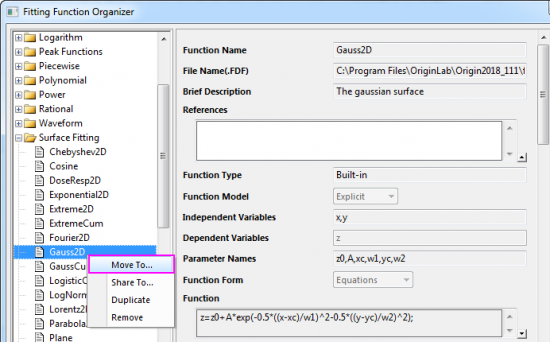
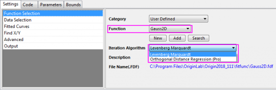
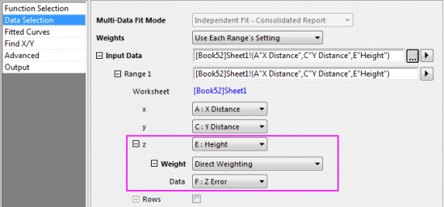
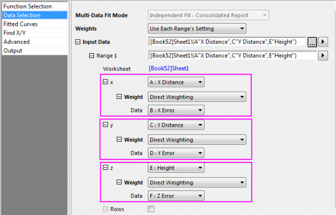

FAQ-894 Wie passe ich eine 3D-XYZ-Oberfläche mit XYZ-Fehler an?
Fit-Surface-WithErr
Letztes Update: 21.09.2017
Wenn Sie eine 3D-XYZ-Oberfläche mit Fehler anpassen möchten, können Sie folgende Schritte durchführen:
- Als Erstes müssen Sie die gewünschte 3D-Oberflächenfunktion aus der Kategorie Surface Fitting in die Kategorie User Defined im Dialog Fitfunktion verwalten verschieben.
- 
- Aktivieren Sie das Arbeitsblatt mit den XYZ-Daten, markieren Sie die Z-Daten und wählen Sie im Menü Analyse: Anpassen: Nichtlinearer Fit, um den Dialog NLFit zu öffnen. Wählen Sie die Oberflächenfunktion, die Sie gerade als Anpassungsfunktion verschoben haben.
- 
- Wenn Sie beim Iterationsalgorithmus
- Levenberg Marquardt wählen, können Sie nur den Z-Fehlerbalken auf der Seite Datenauswahl in die Anpassung einbinden.
-
- 
-
Orthogonale Distanzregression (Pro) wählen, können Fehlerbalken in allen Richtungen (X,Y und Z) in die Anpassung eingeschlossen werden.
- 
Lesen Sie, wie Sie die Gewichtungsmethoden für die Anpassung festlegen, bitte auf dieser Hilfeseite.
- Nehmen Sie weitere notwendige Einstellungen für die Anpassung vor, um die 3D-Anpassung abzuschließen.
Schlüsselwörter:Anpassung, Oberfläche anpassen, Anpassung mit Fehler, 3D-Oberfläche mit Fehler